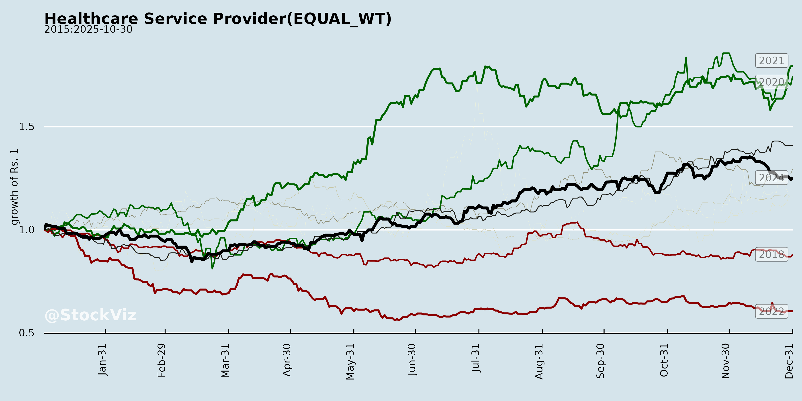
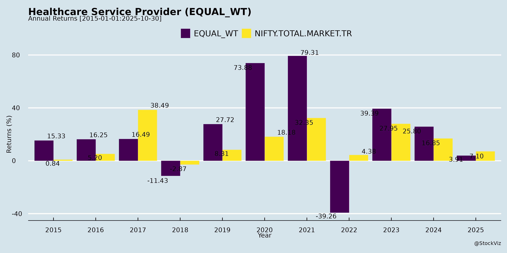
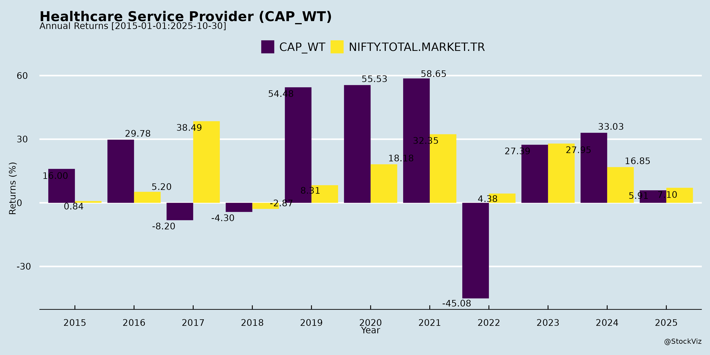
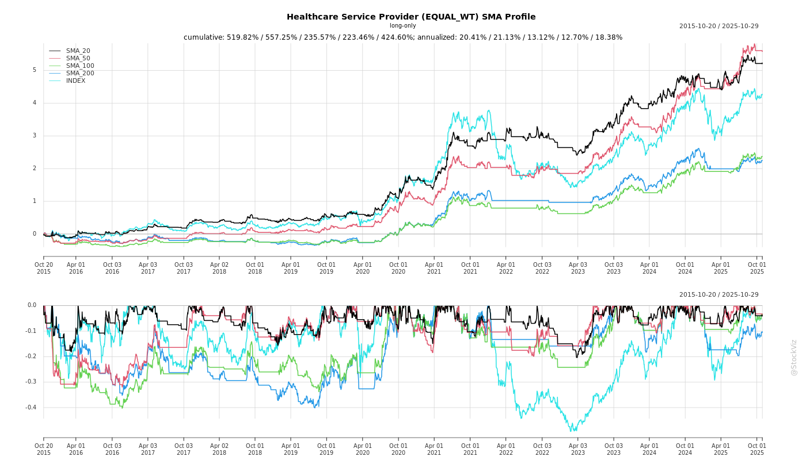
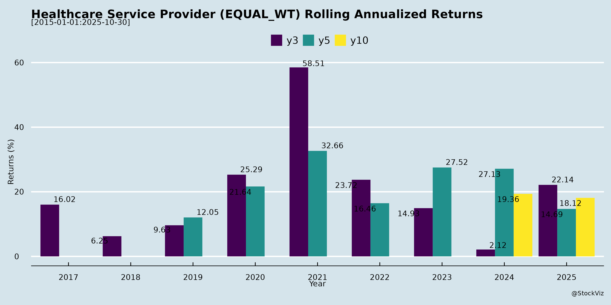
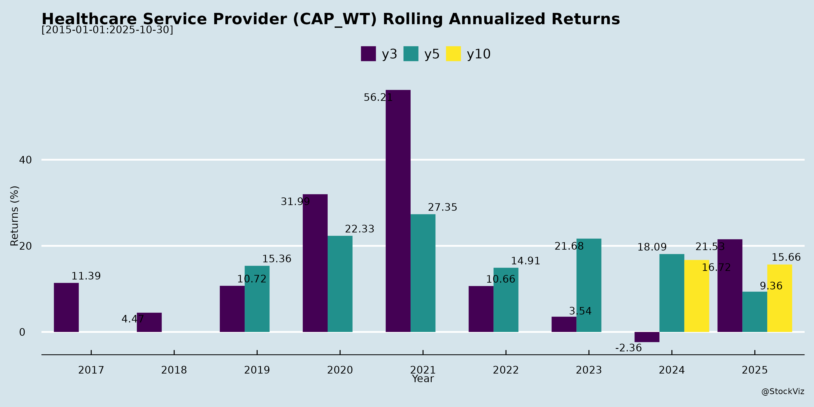

Healthcare Service Provider
Industry Metrics
February 20, 2026
Annual Returns



Cumulative Returns and Drawdowns

SMA Scenarios


Current Distance from SMA
Rolling Returns


Market Cap
EBIT (% of Industry Total)
Revenue (% of Industry Total)
AI Summaries
Analyst
asof: 2025-12-03
Summary Analysis: Indian Healthcare Service Providers (Diagnostics & Distribution Focus)
Based on the provided documents from key players like Thyrocare Technologies, Sastasundar Ventures, Dr Lal PathLabs, Vijaya Diagnostic, Metropolis Healthcare, Krsnaa Diagnostics, and Suraksha Diagnostic (Q2/H1 FY26 earnings transcripts and analyst meeting intimations), the sector exhibits robust momentum driven by volume growth, network expansion, and operational efficiencies. However, it faces seasonal and competitive pressures. Below is a structured analysis of headwinds, tailwinds, growth prospects, and key risks.
Tailwinds
- Strong Financial Performance & Investor Confidence: Thyrocare reported 22% YoY revenue growth (₹217 Cr consolidated), 82% PAT growth (EPS ₹9.05), and 49% normalized EBITDA growth; Sastasundar saw 16.9% YoY revenue growth (₹308 Cr) with gross margins expanding 100 bps to 7.5%. Bonus issues (Thyrocare 2:1), interim dividends (₹7/share), and frequent analyst meetings (e.g., JM Financial, Investec in Mumbai) signal high institutional interest.
- Operational Efficiencies: Thyrocare improved TAT to 3.52 hours, gross margins to 71.6% (+100 bps), and franchisees to 10,100+ (up 20% YoY). Investments in automation, logistics (cold chain data loggers), and quality (100% NABL-accredited, Six Sigma target) are yielding results. Sastasundar emphasizes low working capital (5-6% of sales) and treasury (₹565 Cr) for self-funded growth.
- Digital & Partnership Momentum: Partnerships grew 35% (Thyrocare, e.g., PharmEasy +46%); online/offline mix balanced (20-35% growth). Sastasundar’s B2C (60% YoY) leverages AI, Health Buddies (260+), and JITO private label for affordability.
- Policy & Macro Support: GST input cuts passed to customers; CGHS rate hikes easing pricing pressure.
Headwinds
- Seasonal & Demand Fluctuations: Muted fever volumes (-26% YoY at Thyrocare due to govt. vector control); Q3 expected soft (fixed costs, high H2 base). Radiology modest (3% YoY growth, some center closures).
- Pricing Discipline: Focus on affordability limits price hikes; rationalization in online pricing (no aggressive discounts). Revenue per test/patient low but stable via volume/tests per patient (10.7 at Thyrocare).
- Integration & Cost Pressures: ESOP expenses (non-cash but normalized EBITDA reported); lab integrations (Polo/Vimta reduced count from 39 to 37). Sastasundar notes startup-like quarterly variability.
Growth Prospects
- Network & Volume Expansion: Thyrocare targets mid-teens volume growth (53 Mn tests, +21% YoY); franchisees adding 100-150/month. Sastasundar aims for ₹6,000 Cr by FY30 (₹4,000 Cr B2B RetailerShakti at 30-40% CAGR, 55K retailers). Deeper Tier 2/3 penetration (Tier 3+ strong).
- Product & Category Diversification: Preventive packages (Aarogyam +19%, Jaanch +31%); GLP-1 weight-loss drug opportunity (complementary packages). Sastasundar expanding to personal care, nutraceuticals via JITO (20L/month orders), AI counseling, podcasts.
- Inorganic & Geographic: Tanzania (30% QoQ, breakeven in 18-24 months); Polo/Vimta/SyncHealth integration. Sastasundar warehouse automation (3x capacity), North/East focus (Lucknow/Udaipur).
- Profitability Path: Thyrocare normalized EBITDA 36%; Sastasundar: RetailerShakti EBITDA+ FY26 (1%), B2C contribution+ FY27, PAT+ FY27. ROCE target 50-60% via platforms.
| Metric | Thyrocare (Q2 FY26) | Sastasundar (Q2 FY26) |
|---|---|---|
| Rev Growth | 22% YoY | 16.9% YoY |
| Key Driver | Pathology (24%), Partnerships (35%) | B2B (13%), B2C (60%) |
| Margin | EBITDA 36% (standalone) | Gross 7.5% (+100 bps) |
| Target | Mid-teens vol; H2 cautious | ₹6,000 Cr by FY30 |
Key Risks
- Demand & Seasonality: Fever/viral downturns; high H2 base could pressure guidance (mid-teens targeted).
- Competition & Pricing: Online rationality but metro/Tier-1 saturation; B2G low-margin (1% revenue). GLP-1 early-stage.
- Execution/Integration: Lab closures, franchise activation; working capital volatility in scaling (Sastasundar: 20-25 days target <6%).
- Regulatory/External: Schedule changes due to exigencies; no UPSI shared but reliance on public info. Debt-free but ESOP/capex needs monitoring.
- Macro: Rural penetration slow (habit adoption for AI/digital); B2G price realizations low/margin-dilutive.
Overall Outlook: Bullish medium-term (high-teens growth, profitability inflection) with tailwinds from networks/digital outweighing seasonal headwinds. Sector ROCE/moats via affordability, quality, and platforms position it for 20%+ CAGR, but monitor Q3 for base effects. Investors should watch franchise additions, partnership traction, and GLP-1 uptake.
Financial
asof: 2025-12-01
Summary Analysis: Indian Diagnostic & Healthcare Services Sector (Q3 FY25 Insights from Key Players)
Based on Q3 FY25 (quarter & 9M ended Dec 31, 2024) results from leading players—Dr Lal PathLabs, Metropolis Healthcare, Thyrocare Technologies, Krsnaa Diagnostics, Suraksha Diagnostics, and Sastasundar Ventures—the sector exhibits robust revenue momentum amid consolidation, but faces cost pressures and subsidiary challenges. Revenue grew 10-25% YoY across most (e.g., Lal PathLabs +11% Q3 standalone; Metropolis +11% consolidated; Suraksha ~16% YoY), driven by volumes and pricing. Profits were mixed (e.g., Lal PathLabs PAT +12% YoY; Thyrocare flat; Sastasundar losses widened). Key themes below:
Tailwinds (Positive Drivers)
- Volume-Led Revenue Growth: Strong YoY top-line expansion (e.g., Lal PathLabs 9M revenue ₹18,588 Cr; Metropolis ₹98,591 Cr consolidated; Krsnaa +17% 9M). Pathology/radiology demand resilient post-COVID.
- Profitability & Shareholder Returns: PAT growth in leaders (Lal PathLabs 9M ₹3,387 Cr; Metropolis ₹11,638 Cr). High dividend payouts (Lal PathLabs 3rd interim ₹6/share, total FY25 ₹18+).
- Operational Efficiency: Cost controls in materials/employees; EBITDA margins stable ~25-30% (e.g., Thyrocare, Suraksha).
- Inorganic Momentum: Acquisitions/consolidations (Metropolis-Core Diagnostics; Thyrocare-Palo/Vimta labs; Lal PathLabs-Suburban liquidation for streamlining).
Headwinds (Challenges)
- Cost Inflation: Employee expenses up 10-15% YoY (e.g., Metropolis +10%; Suraksha +11%); depreciation higher due to capex/revision (Thyrocare +₹4.75 Cr from asset life cuts).
- QoQ Declines: Soft Q3 demand (Metropolis revenue -8% QoQ; Thyrocare flat).
- Subsidiary Drag: Losses in intl/smaller units (Lal PathLabs Kenya dissolved; Thyrocare JVs; Sastasundar step-downs like Happymate with going concern issues).
- Margin Pressure: Finance costs elevated (5-10% of expenses); exceptional losses (Sastasundar ₹19,000+ Cr from Flipkart Health exit).
Growth Prospects (High Potential)
- Market Consolidation: Fragmented sector ripe for M&A (e.g., Metropolis ₹346 Cr Core Diagnostics deal; Thyrocare slump sales). PPP/rural expansion (Krsnaa).
- Diversification: Radiology/pathology + digital/e-pharma (Sastasundar Healthbuddy merger; Suraksha ESOPs for talent).
- Geographic/Intl Push: Exports/subsidiaries (Lal PathLabs Nepal/Bangladesh; Metropolis Africa).
- Capex-Led Expansion: New labs/tech (Thyrocare Polo/Vimta; Suraksha IPO proceeds). Projected 15-20% sector CAGR to FY28 (driven by ageing population, preventive health).
Key Risks
- Regulatory/Tax Uncertainty: Disputes (Krsnaa ₹196 Cr demand under appeal; no material impact claimed).
- Execution in Acquisitions: Integration risks, goodwill impairments (Thyrocare ₹4 Cr goodwill).
- Subsidiary/Associate Volatility: Losses/going concern (Sastasundar Happymate net worth erosion; Flipkart Health exit loss).
- Macro/Competition: Demand slowdown, pricing wars (e.g., collection center fees 10-15% of costs), high capex debt.
- Valuation Stretch: Post-IPO (Suraksha) multiples vulnerable to growth misses.
Overall Outlook: Bullish on leaders (Lal PathLabs, Metropolis) with 15%+ revenue/EBITDA growth; midcaps (Thyrocare, Krsnaa) stable but execution key. Sector tailwinds from demographics outweigh headwinds; monitor Q4 for festive recovery. Risks mitigated by cash-rich balance sheets (low debt/EBITDA <1x).
General
asof: 2025-11-29
Analysis of Indian Healthcare Service Providers (Diagnostics Sector)
Based on the provided announcements from key players (Krsnaa Diagnostics, Dr Lal PathLabs, Metropolis Healthcare, Sastasundar Ventures, Suraksha Diagnostics, Thyrocare Technologies, Vijaya Diagnostic Centre), the sector shows routine compliance and governance activities with limited operational insights. Diagnostics remains resilient amid rising health awareness, but announcements highlight minor financial pressures and stake changes. Below is a structured analysis:
Tailwinds (Positive Factors)
- Strong Subsidiary Capital Management: Sastasundar Ventures’ material subsidiary (SHBL) completed a buyback of ~20L shares (8.55% stake) from Mitsubishi for ~₹100 Cr at ₹493/share (Sep-Nov 2025). Parent’s stake rose from 72.14% to 78.89%, enhancing control without cash outflow. Signals financial health and confidence in SHBL’s wholesale pharma/OTC business (FY25 turnover: ₹1,085 Cr).
- Governance Stability: Approvals for director continuity (Krsnaa: Mr. Chetan Desai post-75 tenure till Apr 2026) and clarifications on AGM resolutions (Suraksha: single resolution for director re-appointments) reflect proactive compliance and board stability.
- Routine Investor Engagement: Vijaya’s IEPFA “Saksham Niveshak” campaign for unclaimed dividends shows focus on shareholder welfare, aiding retention.
Headwinds (Negative Factors)
- Tax Litigation Pressures: Dr Lal PathLabs received a FY18 reassessment order (Oct 29, 2025) with ₹2.79 Cr additions/disallowances and ₹2.43 Cr tax demand. Though small (~0.01-0.02% of typical annual revenue), it adds to ongoing disputes; company plans appeal, but could tie up resources.
- Promoter Stake Dilution: Thyrocare’s promoter (Docon) sold 10% stake (53.3L shares) for ₹668 Cr at ~₹1,252/share (Oct 24, 2025), reducing group holding to 60.93% from 70.98%. May signal liquidity needs or reduced promoter commitment.
- Minor Disruptions: Metropolis cancelled an analyst meet (Nov 2025) due to “exigencies,” potentially delaying investor visibility.
Growth Prospects
- Moderate to Stable: No direct revenue/growth data, but SHBL’s buyback (post strong FY24 turnover of ₹1,352 Cr) amid consistent pharma wholesale growth (FY22-25: ₹1,026 Cr to ₹1,085 Cr) suggests sector tailwinds from rising OTC/medicinal demand. Parent-level actions (e.g., Sastasundar stake increase) position for inorganic consolidation.
- Sector-Wide Upside: Routine disclosures indicate operational continuity; diagnostics benefits from preventive health trends, but lacks aggressive expansion signals here. Potential for 10-15% CAGR if health infra investments continue (inferred from financial maneuvers).
Key Risks
| Risk Category | Details | Impact Level |
|---|---|---|
| Regulatory/Tax | Tax demands (Dr Lal: ₹2.43 Cr) and appeals could escalate; IEPFA compliance (Vijaya) risks share transfers if unclaimed dividends persist. | Medium (financial drag if unresolved) |
| Promoter/Governance | Stake sales (Thyrocare: 10% reduction) may erode confidence; director age/tenure issues (Krsnaa) need ongoing approvals. | Low-Medium (watch for further sales) |
| Operational | Event cancellations (Metropolis) hint at unforeseen issues; trading window closures (Sastasundar) limit liquidity. | Low (routine) |
| Sectoral | No material impact noted (Dr Lal), but broader risks like competition, pricing pressure, or forex (if imports) unaddressed. | Low (based on docs) |
Overall Summary
The diagnostics sector faces mild headwinds from tax disputes and promoter stake sales, offset by tailwinds like subsidiary buybacks and governance stability. Growth prospects are steady (driven by pharma wholesale and health demand), but not explosive per these filings. Key risks center on litigation and ownership changes, with no systemic red flags. Investors should monitor appeals/outcomes; sector remains defensive with low beta. Positive: Consolidation signals; Neutral: Compliance-heavy disclosures. (Data as of Nov 2025 filings.)
Investor
asof: 2025-12-03
Analysis of Indian Healthcare Service Providers (Diagnostics & Platforms)
Based on the provided documents (primarily analyst meeting intimations from Dr Lal PathLabs, Vijaya Diagnostic, Metropolis, Krsnaa Diagnostics, Suraksha Diagnostic, and detailed Q2/H1 FY26 earnings transcripts from Thyrocare Technologies and Sastasundar Ventures), this analysis focuses on the diagnostics-heavy healthcare service provider sector in India. Key themes include strong operational execution, franchise/network expansions, and investor engagement via upcoming meetings. Insights are synthesized across players, highlighting sector-level trends.
Tailwinds (Positive Factors)
- Robust Revenue & Volume Growth: Thyrocare reported 22% YoY consolidated revenue growth (INR 217 Cr, highest ever), driven by 21% test volume increase (53.3 Mn tests) and 24% pathology growth. Franchisee revenue up 20%, partnerships 35% (API/PharmEasy +46%). Sastasundar saw 16.9% YoY revenue growth (INR 307.9 Cr), with B2C up ~60%.
- Margin Expansion & Efficiency: Thyrocare’s standalone gross margin at 71.6% (+100 bps YoY), normalized EBITDA margin 36% (+470 bps). Consolidated EBITDA +49%, PAT +82%. Sastasundar gross profit +34.2%, margin +100 bps to 7.5%. Operational levers: automation, slab pricing, bad debt recovery, logistics investments (e.g., cold chain tracking).
- Network & Franchise Expansion: Thyrocare at 10,100+ active franchisees (+20% YoY), 37 labs in India +1 in Tanzania. Deeper Tier 2/3 penetration via field/central teams. Sastasundar scaling RetailerShakti (40K+ retailers, targeting 55K by FY26 end) and Healthbuddies (260 to 360).
- Quality & Innovation: Thyrocare’s 100% NABL accreditation, Six Sigma pursuit (complaints down to 3.8/Mn), new platforms (BioFire PCR, histopathology). Flagship packages (Aarogyam +19%, Jaanch +31%). Research (HbA1c, PIVA studies).
- Investor Confidence Signals: Bonus issue (2:1) & interim dividend (INR 7/share) at Thyrocare; strong treasury (INR 565 Cr net at Sastasundar). Multiple analyst meetings (e.g., JM Financial, JP Morgan, Investec) indicate institutional interest.
- Partnerships & Diversification: Healthtech/corporate growth; B2G (TB projects); international (Tanzania +30% QoQ, breakeven in 18-24 months).
Headwinds (Challenges)
- Seasonal & Disease Muted Volumes: Thyrocare fever volumes -26% YoY due to govt vector control; Q3 expected softer (fixed costs). Monsoon impacts on partnerships.
- Geographic Concentration & Metro Slowdown: Offline growth stronger in Tier 2+ (single-digit in metros); online partnerships metro/Tier-1 dominant.
- Modest Segments: Radiology +3% YoY (Thyrocare), focus on profitability over volume (closures of non-profitable centers).
- Integration Costs: Thyrocare integrating Polo/Vimta/SyncHealth (lab count from 39 to 37 post-integration).
- Pricing Discipline: Affordable positioning limits price hikes; GST benefits passed to franchisees.
Growth Prospects
- Volume & Revenue Acceleration: Mid-teens organic growth sustainable (Thyrocare 22% organic); GLP-1 weight-loss drugs as “huge opportunity” (monitoring packages). Sastasundar targets INR 6,000 Cr by FY30 (INR 4,000 Cr B2B, INR 2,000 Cr B2C), 30-40% CAGR via warehouses (Lucknow, Udaipur), automation, private labels (JITO generics saving 60%).
- Franchisee/Partner Scaling: Thyrocare adding 100-150 net franchisees/month; partnerships (Healthtech, corporates, insurance). Sastasundar: Retailer app rollout (Apr-Jun 2026) for auto-reorders.
- Tech & Category Expansion: AI (counseling, inventory), podcasts, ECG-at-home. New categories (personal care, nutraceuticals, pet care) at higher margins. B2G/international upside.
- Profitability Path: Thyrocare debt-free (INR 190 Cr net cash); Sastasundar breakeven Q4 FY26 (RetailerShakti 1% EBITDA FY26), PAT-positive FY27 via treasury income.
- Market Tailwinds: Preventive health, Tier 3+ penetration, rational online pricing.
Key Risks
- Execution & Seasonality: Exigencies in meetings; Q3 softness, fever/monsoon volatility. H2 high base (mid-teens guidance).
- Competition: Online (PharmEasy et al.) vs. offline; metro share battles. Rational pricing reduces differentiation.
- Regulatory/External: No UPSI shared, but GST/CGHS changes, govt interventions (e.g., vector control). B2G low-margin (1% of revenue).
- Capex & Integration: Lab expansions (thoughtful but opex-intensive); acquisitions (Polo/Vimta). Sastasundar warehouse automation without external capital.
- Macro/Demand: Disease patterns, GLP-1 early-stage; working capital cycles (20-25 days, targeting 3-4%).
- Sector-Specific: Quality complaints (target <3.4/Mn), phlebotomy reliance, radiology profitability.
Summary
The Indian diagnostics/service provider sector exhibits strong tailwinds from volume growth (20%+), margin leverage, and franchise/tech expansions, positioning players like Thyrocare (22% revenue CAGR) for sustained mid-teens growth into Tier 2/3 and adjacencies (GLP-1, international). Sastasundar adds platform-scale potential (30-40% CAGR to FY30). Headwinds are mild/temporary (seasonal volumes, metro competition), offset by debt-free balance sheets and investor interest (multiple roadshows). Prospects are bright (INR 6,000 Cr+ ambitions), but risks center on execution amid seasonality, competition, and regulatory flux. Overall, positive outlook with 15-25% sector growth feasible, prioritizing organic quality over aggressive pricing. Investors should monitor Q3 results for confirmation.
Meeting
asof: 2025-12-02
Summary Analysis: Indian Diagnostic & Healthcare Service Providers (Based on Q2/H1 FY26 Results)
The provided documents cover Q2/H1 FY26 (ended Sep 30, 2025) financial results, board outcomes, and corporate actions from key players: Vijaya Diagnostic Centre, Metropolis Healthcare, Thyrocare Technologies, Krsnaa Diagnostics, Suraksha Diagnostic, and Sastasundar Ventures. These reflect a mixed but resilient sector amid expansion, with aggregate revenue growth ~15-20% YoY across peers (e.g., Vijaya H1 standalone revenue ₹366 Cr, up 16%; Krsnaa consolidated ₹399 Cr, up 12%; Suraksha consolidated ₹1,513 Cr, up 19%). Profitability improved post-adjustments (e.g., Vijaya PAT ₹81 Cr, up 18%), driven by volume-led diagnostics. Below is a structured analysis of headwinds, tailwinds, growth prospects, and key risks.
Tailwinds (Positive Drivers)
- Robust Revenue Momentum: Core diagnostics/radiology drove 15-25% YoY growth (e.g., Vijaya Q2 ₹189 Cr; Suraksha H1 ₹1,513 Cr). Healthcare demand remains strong, supported by post-COVID awareness and preventive testing.
- Operational Efficiency & Scale: Pooling-of-interest amalgamations (Vijaya-MedInova) and network expansions (high capex: Krsnaa ₹103 Cr PPE; Suraksha ₹166 Cr) boosted margins (Vijaya EBITDA ~35%; Krsnaa PAT margins ~11%).
- Capital Management Confidence: Bonus issues (Thyrocare 1:1), dividends (Vijaya ₹2/share), ESOPs (Metropolis new plans), and capital increases signal shareholder value focus.
- Cash Generation: Strong operating cash flows (Krsnaa ₹52 Cr; Suraksha ₹367 Cr) despite capex, aiding debt servicing.
Headwinds (Challenges)
- Cost Pressures: Employee expenses up 10-15% (e.g., Vijaya ₹59 Cr H1; Suraksha ₹262 Cr), finance costs rising (leases/borrowings: Krsnaa ₹14 Cr; Vijaya ₹14 Cr), and depreciation surging (Suraksha ₹196 Cr H1) amid expansions.
- Margin Compression: EBITDA margins dipped in some (Sastasundar consolidated losses; Krsnaa flat at ~16%) due to high capex and impairments (Suraksha ₹-6.9 Cr gain but prior losses).
- Cash Burn in Expansion: Heavy investing outflows (Krsnaa ₹104 Cr; Suraksha ₹218 Cr) led to net debt rises (Krsnaa borrowings ₹23 Cr).
- One-Offs: Exceptional items (Sastasundar ₹-16 Cr impairment) and restatements (Vijaya amalgamation from Apr 2024).
Growth Prospects (Opportunities)
- Expansion & Inorganic Growth: Aggressive capex (₹200-300 Cr peers) for new centers/labs; M&A (Vijaya amalgamation; Suraksha Fetomat acquisition) to consolidate ~₹2,500 Cr market.
- Subsidiary Synergies: Vijaya’s Medinova MRI LLP integration; Suraksha’s radiology subs; potential for Thyrocare bonus to enhance liquidity.
- Digital/Talent Retention: ESOPs (Metropolis 2025 plans up to subsidiaries); e-pharma/diagnostics hybrid (Sastasundar healthcare network ₹586 Cr H1 revenue).
- Sector Tailwinds: Aging population, rising chronic diseases; projected 15-20% CAGR to FY28 (network expansion to Tier-2/3 cities).
Key Risks
- Tax/Regulatory Litigations (High): Krsnaa faces ₹514 Cr IT demand (AY17-24; appeals filed, ₹103 Cr paid under protest); potential cash outflows/penalties.
- Execution & Debt Risks (Medium-High): High lease liabilities (Vijaya ₹34 Cr; Suraksha ₹101 Cr) and borrowings (Krsnaa ₹24 Cr); capex delays could strain liquidity.
- Subsidiary/Associate Volatility (Medium): Sastasundar step-down losses (Genu Path erosion; buyback impacts); Metropolis Item 6 remuneration voted down by institutions (29% against).
- Market/Competition (Medium): Intense rivalry (Apollo, Dr. Lal); impairment risks (Suraksha, Sastasundar); forex/inflation on imports.
- Going Concern (Low-Medium): Sastasundar step-down (Genu Path) flagged uncertainty but parent support provided.
Overall Outlook: Positive with Caution. Sector poised for 15-20% growth via expansion, but monitor tax resolutions (Krsnaa) and capex ROIs. Peers like Vijaya/Suraksha demonstrate resilience; aggregate PAT growth ~20% H1 signals recovery. Investors should watch Q3 debt metrics and litigation updates.
| Metric | H1 FY26 Aggregate (Est.) | YoY Change |
|---|---|---|
| Revenue | ~₹2,800 Cr | +17% |
| PAT | ~₹250 Cr | +25% |
| Capex | ~₹500 Cr | +30% |
Press Release
asof: 2025-11-29
Summary Analysis: Indian Diagnostics Sector (Healthcare Service Providers)
Overview: The Q2/H1 FY26 results from key players (Krsnaa Diagnostics, Metropolis, Suraksha, Thyrocare, Vijaya; Dr Lal PathLabs via product launch) reflect robust sector momentum amid India’s growing healthcare demand. Consolidated revenue grew 10-23% YoY, EBITDA 7-49% (margins 28-40%), and PAT 1-82%, driven by volumes, premiumization, and expansions. Sector benefits from post-COVID health awareness but faces executional pressures.
Tailwinds (Positive Drivers)
- Strong Volume & Revenue Growth: Test/patient volumes up 8-29% YoY (e.g., Suraksha +25-29%, Vijaya +9-12%, Thyrocare 53mn tests +21%); B2C/B2B revenues +16-33% (Metropolis).
- Margin Resilience & Leverage: EBITDA margins stable/high (Krsnaa 28%, Vijaya ~40%, Thyrocare 33%); Thyrocare +4-6% YoY via efficiencies. Debt-free balance sheets (Thyrocare ₹190Cr cash).
- Premium/Wellness Mix Shift: High-value segments accelerating (Metropolis TruHealth/specialty +24-33%, Vijaya wellness +16-21%); rising RPP/RPT +2-11%.
- Quality & Recognition: Global accreditations (Krsnaa ACR/CAP firsts, Suraksha CAP/NABL) boost trust/volumes; awards (Krsnaa “Most Trusted”).
- Capital Returns: Thyrocare 2:1 bonus + ₹7 dividend signals confidence.
Headwinds (Challenges)
- Margin Pressure: EBITDA margins dipped in some (Suraksha 32.8% vs. 36.3%, Vijaya -0.6%); ARPT down (Suraksha -5.5-8.7%) due to pricing competition/mix.
- Working Capital Strain: High receivables (Krsnaa 150+ days from govt norms); new centers drag short-term profitability.
- Seasonal/External Factors: Lower vector-borne diseases (Metropolis); muted PAT growth in spots (Suraksha Q2 -13%, Vijaya Q2 +2.7%).
- Expansion Costs: Investments in hubs/spokes/acquisitions (e.g., Vijaya/Metropolis) weigh on near-term margins.
Growth Prospects
- Geographic/Network Expansion: Tier 2/3 penetration (Metropolis North 19%, Suraksha/Vijaya 11-20 new centers); PPPs (Krsnaa Rajasthan mega-project Q4FY26 impact).
- Inorganic & Tech Plays: Acquisitions (Metropolis Core/DAPIC), genomics/AI (Suraksha Genomics, Metropolis), specialty labs (Dr Lal autoimmune/complement firsts).
- Demand Tailwinds: Autoimmune surge (30% post-COVID rise, 70% women per Dr Lal); preventive/wellness boom.
- Scalability: Franchises/partnerships (Thyrocare +20-35%), pan-India footprint (160+ centers for Vijaya); full-year ramps from H1 launches.
- Outlook: 12-20% revenue growth sustainable; Rajasthan/flagship centers unlock FY27 upside (Krsnaa).
Key Risks
- Regulatory/Payment Delays: Govt norms/receivables (Krsnaa); SEBI compliance, policy shifts.
- Competition & Pricing: Organized shift fragments margins; unorganized players in Tier 2/3.
- Macro/Economic: Slowdown, inflation, monsoon/seasonality impacting volumes.
- Execution/Integration: New center ramps, acquisition synergies (Metropolis); bad debts (though low historically).
- External (Safe Harbors): Currency fluctuations, interest rates, litigation, political changes.
Net View: Tailwinds dominate with 15%+ sector growth potential; monitor receivables/margins for sustained profitability. Sector poised for consolidation via tech/specialization.
Copyright © 2023 SAS Data Analytics Pvt. Ltd. All rights reserved.